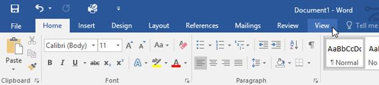
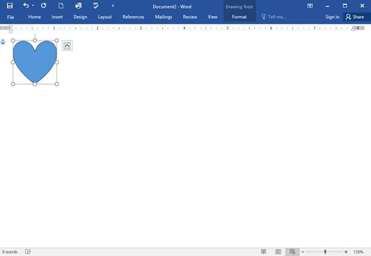
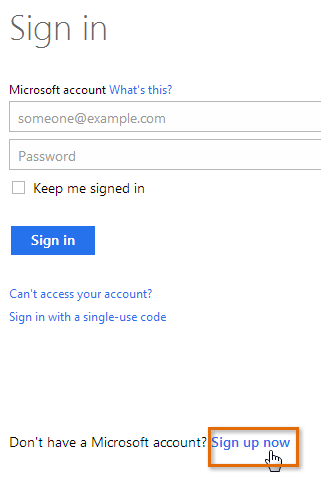
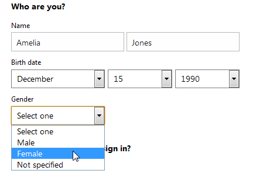
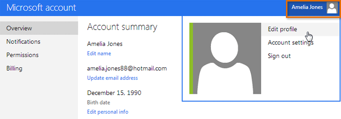
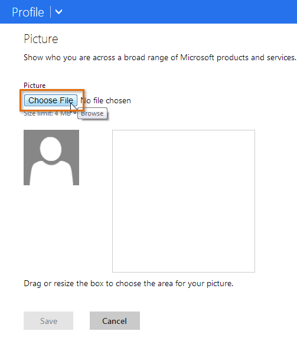

Antarmuka Word
Saat Anda membuka Word untuk pertama kalinya, Layar Mulai akan muncul. Dari sini, Anda dapat membuat dokumen baru, memilih template, dan mengakses dokumen yang baru saja diedit. Dari Layar Mulai, cari dan pilih Dokumen kosong untuk mengakses antarmuka Word.

Klik tombol di interaktif di bawah ini untuk mempelajari lebih lanjut tentang antarmuka Word.
Bekerja dengan lingkungan Word
Semua versi Word terbaru menyertakan Ribbon dan Quick Access Toolbar, tempat Anda akan menemukan perintah untuk melakukan tugas umum di Word, serta tampilan Backstage.
Pita
Word menggunakan sistem pita tab alih-alih menu tradisional. The Ribbon berisi beberapa tab, yang dapat Anda temukan di dekat bagian atas jendela Word.

Setiap tab berisi beberapa kelompok perintah terkait. Misalnya, grup Font pada tab Beranda berisi perintah untuk memformat teks dalam dokumen Anda.

Beberapa grup juga memiliki panah kecil di sudut kanan bawah yang dapat Anda klik untuk opsi lainnya.

Menampilkan dan menyembunyikan Pita
Jika Anda menemukan bahwa Ribbon memakan terlalu banyak ruang layar, Anda dapat menyembunyikannya. Untuk melakukan ini, klik panah Opsi Tampilan Pita di sudut kanan atas Pita, lalu pilih opsi yang diinginkan dari menu tarik-turun:

Pita Sembunyikan Otomatis : Sembunyikan otomatis menampilkan dokumen Anda dalam mode layar penuh dan sepenuhnya menyembunyikan Pita dari pandangan. Untuk menampilkan Ribbon, klik perintah Expand Ribbon di bagian atas layar.
Tampilkan Tab : Opsi ini menyembunyikan semua grup perintah saat tidak digunakan, tetapi tab akan tetap terlihat. Untuk menampilkan Pita, cukup klik tab.
Show Tabs and Commands : Opsi ini memaksimalkan Ribbon. Semua tab dan perintah akan terlihat. Opsi ini dipilih secara default saat Anda membuka Word untuk pertama kalinya.
Untuk mempelajari cara menambahkan tab dan perintah khusus ke Pita, tinjau Ekstra kami tentang Menyesuaikan Pita.
Menggunakan fitur Beri tahu saya
Jika Anda kesulitan menemukan perintah yang Anda inginkan, fitur Beritahu Saya dapat membantu. Ini berfungsi seperti bilah pencarian biasa. Ketik apa yang Anda cari, dan daftar opsi akan muncul. Anda kemudian dapat menggunakan perintah langsung dari menu tanpa harus menemukannya di Ribbon.

Bilah Alat Akses Cepat
Terletak tepat di atas Ribbon, Quick Access Toolbar memungkinkan Anda mengakses perintah umum apa pun tab yang dipilih. Secara default, ini menunjukkan perintah Save, Undo, dan Redo, tetapi Anda dapat menambahkan perintah lain tergantung pada kebutuhan Anda.
Untuk menambahkan perintah ke Bilah Alat Akses Cepat:
Klik panah tarik-turun di sebelah kanan Bilah Alat Akses Cepat.

Pilih perintah yang ingin Anda tambahkan dari menu.

Perintah akan ditambahkan ke Quick Access Toolbar.

Penggaris
The R uler terletak di bagian atas dan di sebelah kiri dokumen Anda. Itu membuatnya lebih mudah untuk menyesuaikan dokumen Anda dengan presisi. Jika mau, Anda dapat menyembunyikan Penggaris untuk membuat lebih banyak ruang layar.
Untuk menampilkan atau menyembunyikan Penggaris:
Klik tab Lihat.

Klik kotak centang di sebelah Ruler untuk menampilkan atau menyembunyikan Ruler.

Tampilan belakang panggung
Tampilan Backstage memberi Anda berbagai pilihan untuk menyimpan, membuka file, mencetak, dan berbagi dokumen Anda. Untuk mengakses tampilan Backstage, klik tab File pada Ribbon.

Klik tombol di interaktif di bawah ini untuk mempelajari lebih lanjut tentang menggunakan tampilan Backstage.

Tampilan dokumen dan zoom
Word memiliki berbagai opsi tampilan yang mengubah cara dokumen Anda ditampilkan. Anda dapat memilih untuk melihat dokumen Anda dalam Mode Baca, Tata Letak Cetak, atau Tata Letak Web. Tampilan ini dapat berguna untuk berbagai tugas, terutama jika Anda berencana untuk mencetak dokumen. Anda juga dapat memperbesar dan memperkecil untuk membuat dokumen Anda lebih mudah dibaca.
Beralih tampilan dokumen
Beralih di antara tampilan dokumen yang berbeda itu mudah. Cukup cari dan pilih perintah tampilan dokumen yang diinginkan di sudut kanan bawah jendela Word.
Read Mode : Tampilan ini membuka dokumen ke layar penuh. Tampilan ini sangat bagus untuk membaca teks dalam jumlah besar atau sekadar meninjau pekerjaan Anda.

Tata Letak Cetak : Ini adalah tampilan dokumen default di Word. Ini menunjukkan seperti apa dokumen itu pada halaman yang dicetak.

Tata Letak Web : Tampilan ini menampilkan dokumen sebagai halaman web, yang dapat membantu jika Anda menggunakan Word untuk menerbitkan konten secara online.

Memperbesar dan memperkecil
Untuk memperbesar atau memperkecil, klik dan seret penggeser kontrol zoom di sudut kanan bawah jendela Word. Anda juga dapat memilih + atau - perintah untuk memperbesar atau secara bertahap. Angka di sebelah penggeser menampilkan persentase zoom saat ini, juga disebut tingkat zoom.

Latihan!
Buka Word, dan buat dokumen kosong.
Ubah Opsi Tampilan Pita menjadi Tampilkan Tab.
Menggunakan Kustomisasi Bilah Alat Akses Cepat, tambahkan Baru, Cetak Cepat, dan Ejaan & Tata Bahasa.
Di bilah Beri tahu saya, ketik Bentuk dan tekan Enter.
Pilih bentuk dari menu, dan klik dua kali di suatu tempat di dokumen Anda.
Tunjukkan Penggaris jika belum terlihat.
Zoom dokumen menjadi 120%.
Ubah tampilan Dokumen menjadi Tata Letak Web.
Setelah selesai, dokumen Anda akan terlihat seperti ini:

Ubah Ribbon Display Options kembali ke Show Tabs and Commands, dan ubah Document View kembali ke Print Layout.
Memahami OneDrive
Banyak fitur di Office diarahkan untuk menyimpan dan berbagi file secara online. OneDrive adalah ruang penyimpanan online Microsoft yang dapat Anda gunakan untuk menyimpan, mengedit, dan berbagi dokumen dan file lainnya. Anda dapat mengakses OneDrive dari komputer, ponsel cerdas, atau perangkat apa pun yang Anda gunakan. Untuk memulai OneDrive, yang perlu Anda lakukan hanyalah menyiapkan akun Microsoft gratis, jika Anda belum memilikinya.
pengantar
Sebelum Anda dapat menggunakan alat dan layanan online Microsoft, Anda memerlukan akun Microsoft gratis.
Dalam pelajaran ini, Anda akan belajar cara membuat akun Microsoft Anda sendiri dan cara menavigasi berbagai layanan online Microsoft. Anda juga akan mempelajari cara menyesuaikan halaman profil Anda.
Membuat akun Microsoft
Jika Anda memiliki akun Hotmail atau akun apa pun yang memungkinkan Anda menggunakan layanan Microsoft lainnya, seperti OneDrive atau XBox Live, Anda sudah memiliki akun Microsoft—cukup masuk dengan informasi akun yang ada.
Untuk membuat akun Microsoft:
Masuk ke login.live.com. Cari dan pilih Daftar sekarang.

Akan muncul formulir pendaftaran. Ikuti petunjuk dan masukkan informasi yang diperlukan, seperti nama, tanggal lahir, dan jenis kelamin Anda.

Tinjau Perjanjian Layanan Microsoft dan pernyataan privasi, lalu klik Buat akun.

Akun Microsoft Anda sekarang telah dibuat, dan halaman pengaturan akun akan muncul.

Sama seperti layanan online lainnya, penting untuk memilih kata sandi yang kuat — dengan kata lain, kata sandi yang sulit ditebak orang lain. Untuk informasi lebih lanjut, lihat pelajaran Tips Kata Sandi kami.
Mulai
Setelah Anda membuat akun Microsoft, Anda akan dibawa ke halaman pengaturan akun Microsoft. Untuk menggunakan fitur dan layanan akun Microsoft Anda, seperti OneDrive atau Messenger, Anda harus mengakses halaman profil Anda terlebih dahulu.
Untuk mengakses halaman profil:
Cari dan pilih ikon profil di sudut kanan atas layar, lalu pilih Edit profil dari menu tarik-turun.

The Halaman profil akan muncul. Dari sini, Anda dapat mengakses bilah alat, yang akan membantu Anda menavigasi layanan online Microsoft.

Untuk menggunakan bilah alat:
Klik panah tarik-turun di sudut kiri atas untuk membuka menu layanan Microsoft: Mail (baik Outlook atau Hotmail), Orang (kontak), Kalender, dan OneDrive (sebelumnya disebut SkyDrive). Cukup klik layanan yang ingin Anda gunakan untuk memulai.

Klik ikon di sudut kanan atas untuk mengakses Messenger, pengaturan profil Anda, dan ikon Roda Gigi, yang mengontrol pengaturan individual untuk setiap layanan Microsoft.

Menyiapkan profil Anda
Setelah Anda menyiapkan akun Microsoft dan terbiasa dengan bilah alat, Anda mungkin ingin menyesuaikan dan menambahkan informasi ke profil pribadi Anda.
Seperti yang Anda pelajari di Pelajaran 1, profil Anda adalah halaman informasi pribadi yang ditautkan ke akun Microsoft Anda. Profil Anda dapat berisi:
Informasi dasar, seperti tanggal lahir dan jenis kelamin Anda
Informasi kontak tambahan
Informasi pribadi tentang pekerjaan, kehidupan sosial, dan pendidikan Anda
Koneksi ke situs jejaring sosial seperti Facebook
Mengisi profil Anda sepenuhnya opsional, dan disarankan untuk tidak menambahkan terlalu banyak informasi pribadi yang mendetail. Namun, mengisi sedikit informasi dapat berguna dalam beberapa situasi. Ini semua tentang memutuskan seberapa banyak Anda ingin berbagi.

Untuk mempelajari lebih lanjut tentang informasi pribadi apa yang aman untuk disertakan dalam profil Anda, lihat pelajaran kami tentangJejaring Sosial Cerdas dan Tip Komunikasi.
Untuk mengakses dan mengedit profil Anda, klik ikon profil di sudut kanan atas, lalu pilih Edit profil dari menu tarik-turun.
Untuk menambahkan gambar profil:
Navigasikan ke halaman profil Anda, lalu cari dan pilih Ubah gambar.

The Halaman gambar profil akan muncul. Klik tombol Pilih File.

Sebuah kotak dialog akan muncul. Cari dan pilih gambar yang diinginkan, lalu klik Open.

Gambar Anda akan muncul. Jika mau, Anda dapat menyeret dan mengubah ukuran kotak untuk memotong gambar Anda. Saat Anda memotong gambar, pratinjau gambar yang dipotong akan muncul di sebelah kiri.

Saat Anda puas dengan gambar yang dipotong, klik Simpan. Gambar profil Anda akan disimpan.

Setelah memiliki akun Microsoft, Anda dapat masuk ke Office. Cukup klik Masuk di sudut kanan atas jendela Word.

Manfaat menggunakan OneDrive
Setelah Anda masuk ke akun Microsoft Anda, ada beberapa hal yang dapat Anda lakukan dengan OneDrive:
Akses file Anda di mana saja : Saat Anda menyimpan file keOneDrive, Anda dapat mengaksesnya dari komputer, tablet, atau ponsel cerdas mana pun yang memiliki koneksi Internet. Anda juga dapat membuat dokumen baru dari OneDrive.
Cadangkan file Anda : Menyimpan file ke OneDrive memberi mereka lapisan perlindungan ekstra. Bahkan jika sesuatu terjadi pada komputer Anda, OneDrive akan menjaga file Anda tetap aman dan dapat diakses.
Berbagi file : Sangat mudah untuk berbagi file OneDrive Anda dengan teman dan rekan kerja. Anda dapat memilih apakah mereka dapat mengedit atau hanya membaca file. Opsi ini sangat bagus untuk kolaborasi karena beberapa orang dapat mengedit dokumen secara bersamaan (juga dikenal sebagai penulisan bersama).
Menyimpan dan membuka file
Saat Anda masuk ke akun Microsoft Anda, OneDrive akan muncul sebagai opsi setiap kali Anda menyimpan atau membuka file. Anda masih memiliki pilihan untuk menyimpan file ke komputer Anda. Namun, menyimpan file ke OneDrive memungkinkan Anda mengaksesnya dari komputer lain, dan juga memungkinkan Anda berbagi file dengan teman dan rekan kerja.
Misalnya, saat Anda mengklik Simpan Sebagai, Anda dapat memilih OneDrive atau PC ini sebagai lokasi penyimpanan.